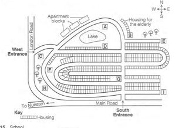
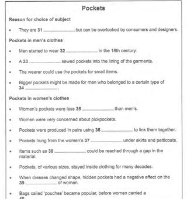

Listening visuals Cambridge 18Reviewed results: 122 confirmed issue records (86 duplicate pairs, 9 sequence inversions, 1 wrong-Part image, 26 clipped images); 23 suspected records. Counts overlap Parts/assets. Full reviewed CSV. Raw audit.json/findings.csv are detector output, not the final defect list. Fallback scope alone is not a defect. OCR ranges are incomplete hints.
All books · Cambridge 18: 16 Parts · exact current resolver outputCambridge 18 / Test 1 / Part 1
V0389:confirmed:duplicate_content
Q[1, 10]: 1, 2 [Part fallback]
 #1 OCR Q[[1, 10]] · 1299×1737
#1 OCR Q[[1, 10]] · 1299×1737
Test_1_Part_1_PDF_012.png
assets/public/5c58cd97962946273d589b0f6094d67dabb1c24acb0045d91dac67e59a07c677.png
asset-5c58cd97962946273d589b0f6094d67dabb1c24acb0045d91dac67e59a07c677#2 OCR Q[[1, 10]] · 1157×1164
Test_1_Part_1_Transport_Notes.png
assets/public/1f97b8aba1f1069478a38ad393bbcc24b9a01ccdbeb8829ad7fdca990e038a61.png
asset-1f97b8aba1f1069478a38ad393bbcc24b9a01ccdbeb8829ad7fdca990e038a61Cambridge 18 / Test 1 / Part 2
No confirmed/candidate defect detected; not a visual PASS
Q[11, 13]: 1, 2 [Part fallback]
Q[14, 15]: 1, 2 [Part fallback]
Q[16, 20]: 1, 2 [Part fallback]
 #1 OCR Q[[11, 20], [11, 13]] · 1299×1737
#1 OCR Q[[11, 20], [11, 13]] · 1299×1737
Test_1_Part_2_PDF_013.png
assets/public/f2d6cd666159861923f90c3ecbf78e64cc47584564cf0b4c20eae01819bdcec4.png
asset-f2d6cd666159861923f90c3ecbf78e64cc47584564cf0b4c20eae01819bdcec4 #2 OCR Q[[16, 20], [16, 20]] · 1299×1737
#2 OCR Q[[16, 20], [16, 20]] · 1299×1737
Test_1_Part_2_PDF_014.png
assets/public/25e57e89cc1403406babc6fef91cd74ed53c67cc06e59592d0c471fca3ded51d.png
asset-25e57e89cc1403406babc6fef91cd74ed53c67cc06e59592d0c471fca3ded51dCambridge 18 / Test 1 / Part 3
No confirmed/candidate defect detected; not a visual PASS
Q[21, 26]: 1, 2 [Part fallback]
Q[27, 28]: 1, 2 [Part fallback]
Q[29, 30]: 1, 2 [Part fallback]
 #1 OCR Q[[21, 30], [21, 26]] · 1299×1737
#1 OCR Q[[21, 30], [21, 26]] · 1299×1737
Test_1_Part_3_PDF_015.png
assets/public/8084fdb63a764a7ea1b17bcc03fc15b88e3883b5f787ccca2b8b7926a9477334.png
asset-8084fdb63a764a7ea1b17bcc03fc15b88e3883b5f787ccca2b8b7926a9477334 #2 OCR Q[] · 1299×1737
#2 OCR Q[] · 1299×1737
Test_1_Part_3_PDF_016.png
assets/public/1bfd7e2fcd0a624a360cda4542ff59e709a40a8c99bee3070287656d65ea6eef.png
asset-1bfd7e2fcd0a624a360cda4542ff59e709a40a8c99bee3070287656d65ea6eefCambridge 18 / Test 1 / Part 4
V0397:confirmed:duplicate_content; C026:suspected:crop_edge_risk
Q[31, 40]: 1, 2 [Part fallback]
#1 OCR Q[] · 1144×1215
Test_1_Part_4_Elephant_Translocation_Notes.png
assets/public/51c19d43da36195b2be4f2bfb860832f07d963db83b2f9b34a8123aae9c6e4eb.png
asset-51c19d43da36195b2be4f2bfb860832f07d963db83b2f9b34a8123aae9c6e4eb #2 OCR Q[[31, 40]] · 1299×1737
#2 OCR Q[[31, 40]] · 1299×1737
Test_1_Part_4_PDF_017.png
assets/public/bf2730943adb17517feed7f50d77e474b007530461074751bff59b8bc373234c.png
asset-bf2730943adb17517feed7f50d77e474b007530461074751bff59b8bc373234c Cambridge 18 / Test 2 / Part 1
V0400:confirmed:duplicate_content
Q[1, 5]: 1, 2, 3 [Part fallback]
Q[6, 10]: 1, 2, 3
 #1 OCR Q[[1, 10], [1, 5]] · 1299×1737
#1 OCR Q[[1, 10], [1, 5]] · 1299×1737
Test_2_Part_1_PDF_034.png
assets/public/e1c88aac896f4fb90c9fcf2389d9f8cf09ff8b34eb76d33b86649df089c01bde.png
asset-e1c88aac896f4fb90c9fcf2389d9f8cf09ff8b34eb76d33b86649df089c01bde#2 OCR Q[] · 1183×556
Test_2_Part_1_Table_PDF_035.png
assets/public/b4ce3397a181baf020a8b9844ace439347d68b21c64a32b9c88185921063d33b.png
asset-b4ce3397a181baf020a8b9844ace439347d68b21c64a32b9c88185921063d33b #3 OCR Q[[6, 10]] · 1299×1737
#3 OCR Q[[6, 10]] · 1299×1737
Test_2_Part_4_PDF_035.png
assets/public/68b10200319f1b01396fc2a03ad2021de965f0b418da71c3019cae11d114754a.png
asset-68b10200319f1b01396fc2a03ad2021de965f0b418da71c3019cae11d114754aCambridge 18 / Test 2 / Part 2
V0402:confirmed:duplicate_content; C042:suspected:crop_edge_risk
Q[11, 12]: 1, 2, 3 [Part fallback]
Q[13, 14]: 1, 2, 3 [Part fallback]
Q[15, 20]: 1, 2, 3

#1 OCR Q[] · 1144×781
Test_2_Part_2_Housing_Development_Map.png
assets/public/673730aec49fe2c284c2f0042a5dd4cf8cd3b78a86a20f9a2fa310df87a36780.png
asset-673730aec49fe2c284c2f0042a5dd4cf8cd3b78a86a20f9a2fa310df87a36780 #2 OCR Q[[11, 20]] · 1299×1737
#2 OCR Q[[11, 20]] · 1299×1737
Test_2_Part_2_PDF_036.png
assets/public/5fd1e08534a18941fcfc180cb5350197535f2002dc31e895a084a91f52a48587.png
asset-5fd1e08534a18941fcfc180cb5350197535f2002dc31e895a084a91f52a48587 #3 OCR Q[[15, 20], [15, 20]] · 1299×1737
#3 OCR Q[[15, 20], [15, 20]] · 1299×1737
Test_2_Part_2_PDF_037.png
assets/public/59b49f2c5c251250da7bcd6e14851137e5056d63fb06510281137492fe9e68c3.png
asset-59b49f2c5c251250da7bcd6e14851137e5056d63fb06510281137492fe9e68c3Cambridge 18 / Test 2 / Part 3
No confirmed/candidate defect detected; not a visual PASS
Q[21, 24]: 1, 2 [Part fallback]
Q[25, 26]: 1, 2 [Part fallback]
Q[27, 30]: 1, 2 [Part fallback]
 #1 OCR Q[[21, 30], [21, 24]] · 1299×1737
#1 OCR Q[[21, 30], [21, 24]] · 1299×1737
Test_2_Part_3_PDF_038.png
assets/public/459f949de1bfcc5a833f2e11f9740f5985b2c168d88a5193f5ac231fc964cb4c.png
asset-459f949de1bfcc5a833f2e11f9740f5985b2c168d88a5193f5ac231fc964cb4c #2 OCR Q[[27, 30], [27, 30]] · 1299×1737
#2 OCR Q[[27, 30], [27, 30]] · 1299×1737
Test_2_Part_3_PDF_039.png
assets/public/b4f6399cbb4d4eefbe3de07d81f0a617d6f659fbb5c0dd26d57e3ac40bf420c7.png
asset-b4f6399cbb4d4eefbe3de07d81f0a617d6f659fbb5c0dd26d57e3ac40bf420c7Cambridge 18 / Test 2 / Part 4
V0408:confirmed:foreign_question_range; V0409:confirmed:duplicate_content; C010:suspected:crop_edge_risk
Q[31, 40]: 1, 2, 3 [Part fallback]
#1 OCR Q[[6, 10]] · 1299×1737
Test_2_Part_4_PDF_035.png
assets/public/68b10200319f1b01396fc2a03ad2021de965f0b418da71c3019cae11d114754a.png
asset-68b10200319f1b01396fc2a03ad2021de965f0b418da71c3019cae11d114754a #2 OCR Q[[31, 40]] · 1299×1737
#2 OCR Q[[31, 40]] · 1299×1737
Test_2_Part_4_PDF_040.png
assets/public/785b97b4897fbc821190f0e55a2220f8f3304499f3a23f242db64430e9981a0c.png
asset-785b97b4897fbc821190f0e55a2220f8f3304499f3a23f242db64430e9981a0c
#3 OCR Q[] · 1144×1216
Test_2_Part_4_Pockets_Notes.png
assets/public/8a50969c622f70f7674980f76f6a15427c44fc5dae9954e21bcbcef70ef27d4e.png
asset-8a50969c622f70f7674980f76f6a15427c44fc5dae9954e21bcbcef70ef27d4e Cambridge 18 / Test 3 / Part 1
V0411:confirmed:duplicate_content; C017:confirmed:clipped_source
Q[1, 4]: 1, 2
Q[5, 10]: 1, 2
#1 OCR Q[[5, 10]] · 1170×1094
Test_3_Part_1_Form_Table_PDF_057.png
assets/public/c48791329bb886644a402f27311fd1ce7292e7fc97bf6c35cc1b44b4760f1127.png
asset-c48791329bb886644a402f27311fd1ce7292e7fc97bf6c35cc1b44b4760f1127 #2 OCR Q[[1, 10], [1, 4], [5, 10]] · 1299×1737
#2 OCR Q[[1, 10], [1, 4], [5, 10]] · 1299×1737
Test_3_Part_1_PDF_057.png
assets/public/97d2814c4023ecdc5b100b54c49c1a445137b32caff617ad01b49a67f9d82373.png
asset-97d2814c4023ecdc5b100b54c49c1a445137b32caff617ad01b49a67f9d82373 Cambridge 18 / Test 3 / Part 2
No confirmed/candidate defect detected; not a visual PASS
Q[11, 12]: 1, 2 [Part fallback]
Q[13, 14]: 1, 2 [Part fallback]
Q[15, 20]: 1, 2 [Part fallback]
 #1 OCR Q[[11, 20]] · 1299×1737
#1 OCR Q[[11, 20]] · 1299×1737
Test_3_Part_2_PDF_058.png
assets/public/f67573c3ab53a2054a096a85ca623be7e5d59b5a52feef52a1d4870f510682f3.png
asset-f67573c3ab53a2054a096a85ca623be7e5d59b5a52feef52a1d4870f510682f3 #2 OCR Q[[15, 20]] · 1299×1737
#2 OCR Q[[15, 20]] · 1299×1737
Test_3_Part_2_PDF_059.png
assets/public/923d946907bc1c141359eaa68a60ddc6aaec89e95c395e356680ba2b43363162.png
asset-923d946907bc1c141359eaa68a60ddc6aaec89e95c395e356680ba2b43363162Cambridge 18 / Test 3 / Part 3
No confirmed/candidate defect detected; not a visual PASS
Q[21, 22]: 1, 2 [Part fallback]
Q[23, 24]: 1, 2 [Part fallback]
Q[25, 30]: 1, 2 [Part fallback]
 #1 OCR Q[[21, 30]] · 1299×1737
#1 OCR Q[[21, 30]] · 1299×1737
Test_3_Part_3_PDF_060.png
assets/public/af98851d9bd6363970f9c6efb73f40337965285c266ed220df93dd5e13eb5b7e.png
asset-af98851d9bd6363970f9c6efb73f40337965285c266ed220df93dd5e13eb5b7e #2 OCR Q[[25, 30], [25, 30]] · 1299×1737
#2 OCR Q[[25, 30], [25, 30]] · 1299×1737
Test_3_Part_3_PDF_061.png
assets/public/df97a6add136d194b7c65bc46a013f62b3b83d19a9b407772b22ca4e5c7e5008.png
asset-df97a6add136d194b7c65bc46a013f62b3b83d19a9b407772b22ca4e5c7e5008Cambridge 18 / Test 3 / Part 4
V0419:confirmed:duplicate_content
Q[31, 40]: 1, 2 [Part fallback]
 #1 OCR Q[[31, 40]] · 1299×1737
#1 OCR Q[[31, 40]] · 1299×1737
Test_3_Part_4_PDF_062.png
assets/public/4f7c8f28101a45fef4cdb9debe131a0d82f84ab76082f28e1c77e144c8e722e4.png
asset-4f7c8f28101a45fef4cdb9debe131a0d82f84ab76082f28e1c77e144c8e722e4#2 OCR Q[] · 1144×1216
Test_3_Part_4_Space_Traffic_Notes.png
assets/public/44bd98cc67529f67ae60e2f8b53338b2350230af342189fcab1f53591dbe7a36.png
asset-44bd98cc67529f67ae60e2f8b53338b2350230af342189fcab1f53591dbe7a36Cambridge 18 / Test 4 / Part 1
V0421:confirmed:duplicate_content; C019:confirmed:clipped_source
Q[1, 10]: 1, 2 [Part fallback]
#1 OCR Q[] · 1144×1077
Test_4_Part_1_Employment_Notes.png
assets/public/58dbce6b29b3208e0d201f7123a158e7861b519596554605982cf7b26e0df93d.png
asset-58dbce6b29b3208e0d201f7123a158e7861b519596554605982cf7b26e0df93d #2 OCR Q[[1, 10]] · 1299×1737
#2 OCR Q[[1, 10]] · 1299×1737
Test_4_Part_1_PDF_080.png
assets/public/eb7f69cc444afab1c690db44804f116f3d450bd7a07c70bebffe64f1a5464cca.png
asset-eb7f69cc444afab1c690db44804f116f3d450bd7a07c70bebffe64f1a5464cca Cambridge 18 / Test 4 / Part 2
No confirmed/candidate defect detected; not a visual PASS
Q[11, 14]: 1, 2 [Part fallback]
Q[15, 20]: 1, 2 [Part fallback]
 #1 OCR Q[[11, 20], [11, 14]] · 1299×1737
#1 OCR Q[[11, 20], [11, 14]] · 1299×1737
Test_4_Part_2_PDF_081.png
assets/public/497062bf68ba7c802e9cfc841288b928b991f53a977caad4b2165bcc0172ba8d.png
asset-497062bf68ba7c802e9cfc841288b928b991f53a977caad4b2165bcc0172ba8d #2 OCR Q[[15, 20], [15, 20]] · 1299×1737
#2 OCR Q[[15, 20], [15, 20]] · 1299×1737
Test_4_Part_2_PDF_082.png
assets/public/8a6dbf1fc2c8b17e7219ea89c1b9ba82bd41426e9af397827f2bca4038a3bc1f.png
asset-8a6dbf1fc2c8b17e7219ea89c1b9ba82bd41426e9af397827f2bca4038a3bc1fCambridge 18 / Test 4 / Part 3
No confirmed/candidate defect detected; not a visual PASS
Q[21, 22]: 1, 2 [Part fallback]
Q[23, 27]: 1, 2 [Part fallback]
Q[28, 30]: 1, 2 [Part fallback]
 #1 OCR Q[[21, 30], [23, 27], [23, 27]] · 1299×1737
#1 OCR Q[[21, 30], [23, 27], [23, 27]] · 1299×1737
Test_4_Part_3_PDF_083.png
assets/public/f2fb9114261f44661b182078af54b9f2fb7a8599e14cbe53aae00b90a189797a.png
asset-f2fb9114261f44661b182078af54b9f2fb7a8599e14cbe53aae00b90a189797a #2 OCR Q[[28, 30]] · 1299×1737
#2 OCR Q[[28, 30]] · 1299×1737
Test_4_Part_3_PDF_084.png
assets/public/12b916a45b019abd3e44180c524ef743ed49ad39e12dd24b3e5d5f4da50009ad.png
asset-12b916a45b019abd3e44180c524ef743ed49ad39e12dd24b3e5d5f4da50009adCambridge 18 / Test 4 / Part 4
V0428:confirmed:duplicate_content; C027:suspected:crop_edge_risk
Q[31, 40]: 1, 2 [Part fallback]
 #1 OCR Q[[31, 40]] · 1299×1737
#1 OCR Q[[31, 40]] · 1299×1737
Test_4_Part_4_PDF_085.png
assets/public/aa8d64fc06318801eaf3df68806a65f1b6c8cc5ecb34391dfd9d1979f56b526d.png
asset-aa8d64fc06318801eaf3df68806a65f1b6c8cc5ecb34391dfd9d1979f56b526d#2 OCR Q[] · 1144×1268
Test_4_Part_4_Victor_Hugo_Notes.png
assets/public/c7dec87e12c61cdacb392c4f187e69ae40a13b8df6596b674a1630fe3595eec9.png
asset-c7dec87e12c61cdacb392c4f187e69ae40a13b8df6596b674a1630fe3595eec9